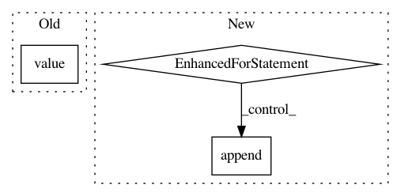

ee25b15fcf426d05f730d0a025c752fe92d10873,ilastik/applets/wsdt/wsdtGui.py,WsdtGui,configure_operator_from_gui,#WsdtGui#,210
Before Change
return False
with self.set_updating():
op = self.topLevelOperatorView
op.ChannelSelection.setValue( self.channel_box.value() )
op.Pmin.setValue( self.threshold_box.value() )
op.MinMembraneSize.setValue( self.membrane_size_box.value() )
op.MinSegmentSize.setValue( self.superpixel_size_box.value() )
After Change
op = self.topLevelOperatorView
channel_selections = []
for ch in range(len(self.channel_actions)):
if self.channel_actions[ch].isChecked():
channel_selections.append(ch)
op.ChannelSelections.setValue( channel_selections )
op.Pmin.setValue( self.threshold_box.value() )
op.MinMembraneSize.setValue( self.membrane_size_box.value() )
op.MinSegmentSize.setValue( self.superpixel_size_box.value() )
In pattern: SUPERPATTERN
Frequency: 3
Non-data size: 3
Instances
Project Name: ilastik/ilastik
Commit Name: ee25b15fcf426d05f730d0a025c752fe92d10873
Time: 2017-02-21
Author: bergs@janelia.hhmi.org
File Name: ilastik/applets/wsdt/wsdtGui.py
Class Name: WsdtGui
Method Name: configure_operator_from_gui
Project Name: tiberiu44/TTS-Cube
Commit Name: f1ac81075ac88cf1fb9f701fc1ee78696edd078f
Time: 2018-10-31
Author: boros@adobe.com
File Name: cube/models/vocoder.py
Class Name: BeeCoder
Method Name: synthesize
Project Name: Scitator/catalyst
Commit Name: c6ea0fc2354e54e3ae76fee78702c8ee228ecad7
Time: 2019-10-29
Author: 34604336+jchen42703@users.noreply.github.com
File Name: catalyst/dl/callbacks/metrics/auc.py
Class Name: AUCCallback
Method Name: on_loader_end